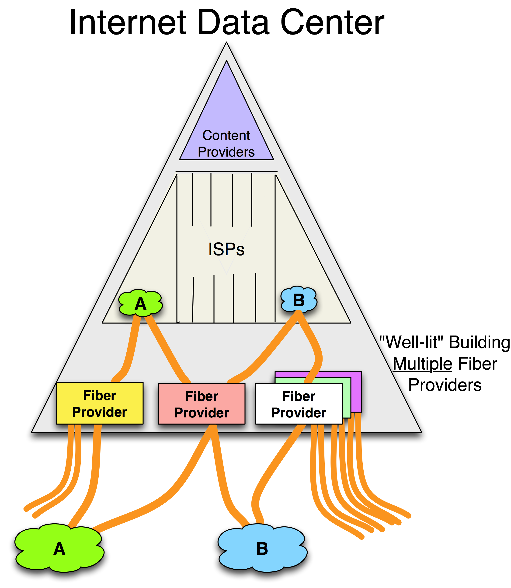
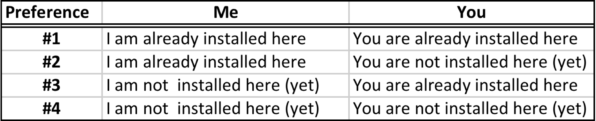
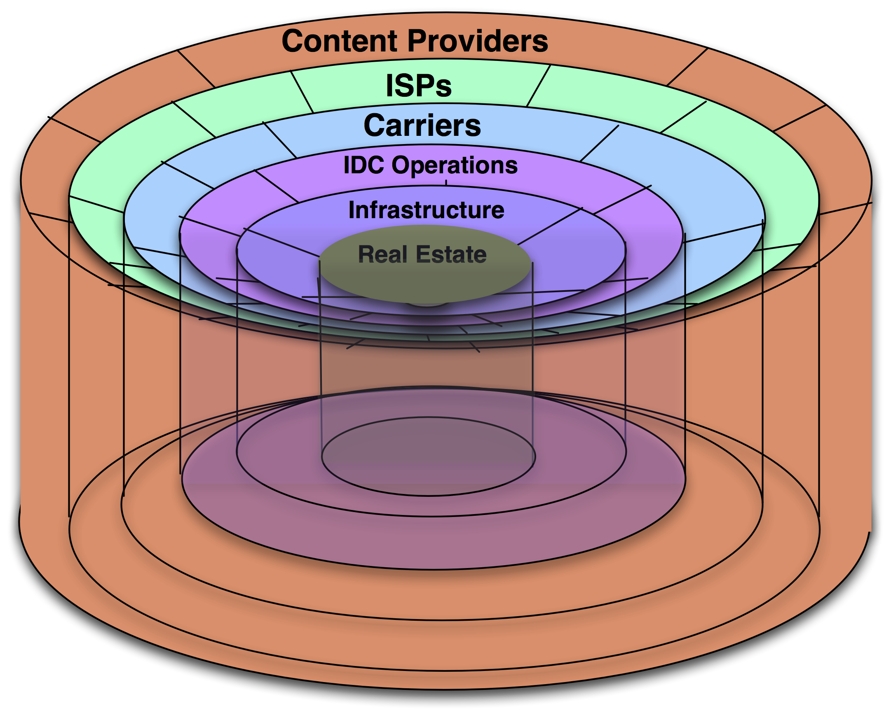

Chapter 6 - Selecting an IXP
During my years working with the peering coordinator community, I asked them about peering, their peering processes, and in particular, what they looked for in Internet Exchange Points (IXPs). Naturally, given my role as Co-Founder and Chief Technical Liaison for Equinix, I wanted to understand when and why they used IXPs. I asked for the types of questions they asked of IXPs and I tried to understand their decision processes. After hundreds of conversations and taking lots of notes, I had documented the collective peering community view of IXPs. To the ISP and IXP community, the information in this chapter is valuable. In this chapter I enumerate the top ten selection criteria that ISPs use when choosing an IXP, along with the types of questions they said that they ask the IXPs to determine their strengths in each of these critical areas.
Introduction
The first thing to point out is that the ISPs generally have the following goals with respect to setting up peering:
- Get peering set up as soon as possible
- Minimize the cost of the interconnection and transit costs
- Maximize the benefits of a systematic approach to peering
- Execute the regional operations plan as strategy dictates
- Fulfill obligations of a larger business arrangement
The ISPs said that they selected IXPs based on the following criteria:
- How will I get transport into the IXP? (Telecommunications access)
- How will I get equipment into the IXP? (Ease of deployment)
- Am I and my target peer both in the IXP already? (Current presences)
- How easy will it be for me to operate at the IXP? (Operations support)
- Will a competitor benefit from my participation at the IXP? (Business alignment)
- How much will it cost to peer at the IXP? (Cost issues)
- Will the IXP be successful? (Credibility issues)
- Whom else can I peer with at the IXP? (Exchange population issues)
- Does the IXP exist today? (Existing vs. new IXP?)
- What routes will I pick up at the IXP? (Regional route strength)
Let’s expand briefly on each of these criteria by presenting the types of questions the ISPs ask during the selection process.
1 – Telecommunications Access
One of the first issues ISPs explore is how they will establish their telecommunications services in the exchange. Here are the types of questions they ask:
What carriers service the IXP? Some ISPs have volume deals with certain carriers and therefore prefer exchanges where their carrier of choice can quickly provision circuits as part of an existing agreement.
How fast can my circuits be brought into the colocation center? This question goes to the goal of fast deployment once the IXP selection is made.
How many carriers compete for my business for circuits back to my local POP? Multiple competing carriers lead to lower costs and faster deployment.
For facilities-based ISPs, what is the cost of building into the exchange (how far away are they and what obstacles present themselves)?
Do dark-fiber providers need to go through a meet-me room or can they connect directly to the ISP equipment? Every cut in the fiber causes some signal loss.
What fiber services are available from which vendors? Is there a vendor that will sell or lease dark fiber? Wavelengths? Circuits? Some ISPs have preferred transport models. These issues are shown graphically in Figure 6-1.

Figure 6-1. Telecommunications Access Issues.
Access into the IXP data center is one of the most important issues that peers explore when selecting an IXP.
2 – Deployment Process
Deploying telecommunications equipment into an IXP has proven to be difficult in some instances. Questions that highlight these issues include:
How do I get my equipment into the exchange (assuming it supports colocation)? Some IXPs used to allow only circuits to connect remotely – colocation was not supported.
Can I drop-ship equipment in or do I have to bring it with me for an install? Some equipment manufacturers allow you to ship from manufacturer directly to the colocation provider.
Will someone act as remote hands and eyes to get the equipment into the racks or do I have to do the installation myself? The installation process, called “rack and stack,” can take days or months to complete. Some ISPs deploy equipment preloaded in a rack and simply need someone to plug it in and turn it on, and perhaps help debug things when they break. Some IXPs offer and facilitate these services and some do not.
Does the exchange have sufficient space, power, air conditioning, etc. for my current and future needs? Running out of power remains a significant problem as equipment power requirements continue to increase. Many colocation providers sell racks with power equivalents, so if you need more power you have to buy more racks whether you use them or not!
In summary, when comparing exchange environments, what processes and costs are associated with deployment (shipping, installation, travel, staff time, etc.) into the IXP? The answers to these questions impact the speed of deployment and the costs of peering.
3 – ISP Current Presences
The most expedient (and inexpensive) peering arrangements are the ones made between ISPs that are already located at the same exchange (Table 6-1).
Table 6-1. ISP Current Presences Preferences.

For peers within the same exchange, cross-connects and switching fabric connections can be made within a few hours. Peering sessions can be established a few hours after that.
This fact may seem obvious, but ISPs tend to prefer to peer at IXPs where one or both ISPs are already present.
4 – Operations Support
The ISPs said that when evaluating IXPs they also consider the ongoing operations environment within the exchange. They ask questions like these:
How is the real estate protected? How is access and security handled at the facility? Some IXPs run by telephone companies allowed access only between 9am and 6pm and required escorts during the installation.
How are data center operations handled? The reliability of the infrastructure and the time to repair failures was cited as a critical issue.
Is a 24/7 NOC monitoring the switch? For those that depend on the peering fabric for the value they derive from the IXP cited, this criterion is a critical one.
How will I be notified for outages or issues related to the IXP or underlying services? ISPs can forgive the occasional failure provided proper notification and updates are made.
The rings of data center operations support services are shown in Figure 6-2. We will discuss this data center operations model in more detail in Chapter 11 - Taxonomy of Data Centers.

Figure 6-2 Internet Data Center (IDC) operations.
Beyond the basic data center operations, ISPs are interested in the interconnection services and ask questions such as the following:
Do the colocation facilities allow private network interconnections? How long will it take to add private interconnections? Fiber cross-connects in some IXPs in Japan require the approval of the ISP that owns the exchange. It may take months to process a cross-connect in these cases. Facilities in the U.S. provision cross-connects within 24 hours.
Are there requirements to connect to a central switch? At the Hong Kong Internet Exchange (HKIX) customers must connect to the switch fabric and sign a Multi-Lateral Peering Agreement (MLPA) agreeing to peer with all participants. Some get around this requirement to peer with everyone by announcing only a subset of routes to everyone.
Is there sufficient power, HVAC, capacity at the switch, space for additional racks, real-time staff support, and legal time for contract review? For a variety of reasons, it may take time to provision new racks, or there may be a long lead time for the allocation of internal resources to install new customers.
Will I have a Right-of-First-Refusal, the ability to lease adjacent available racks should others want to lease them? During times of limited supply of racks, this option is a valuable one to have. Expanding into another area of the colocation center or building into another colocation center results in a more costly and difficult-to- maintain deployment.
ISPs prefer operations-friendly exchanges over those with operations restrictions. In any case they seek to understand the processes used to maintain and grow their presence at the IXP.
5 – Business Alignment
One important nontechnical issue is business alignment.
Will using this exchange directly or indirectly support a competitor? When the NAPs were owned by carriers, there was significant concern about handing over money to competitors. Building into a competitor’s exchange point supported that competitor.
A carrier-neutral exchange (defined as an IXP that is not owned or aligned with any particular carrier, fiber provider, or ISP) provides an open, distortion-free marketplace for carrier and ISP services.
Market distortions often result when an exchange is owned by one of its participants. This ownership manifests itself as a constraint (can’t interconnect to a particular party, for example) or as a requirement (a particular carrier or ISP service is required). These business clashes effectively constrain the market for services within an exchange.
Since it is difficult and disruptive to move equipment out of an exchange, ISPs prefer a neutrally operated exchange environment that will not suffer from market distortions or limitations due to business conflicts of interest.
ISPs prefer an IXP that is not owned or operated by a competitor.
Notes from the field.
Why is Carrier-Neutrality Important?
Here are a few examples of business alignment clashes:
A large network-savvy content provider installed at the JPIX peered openly. The provider requested a cross-connect to another ISP in the building. The colocation provider refused since it might adversely impact its business by bypassing it. (KDDI owns the building and KDDI also sells transit.)
Another example of a business alignment issue is MAE-East. In the late 1990s, WorldCom, a large ISP at the time, owned MAE-East, a large IXP on the east cost of the U.S. Building into MAE-East supported a competitor (WorldCom) and required purchasing WorldCom circuits. Peering at MAE-East meant paying money to your competitor, supporting its peering business, and reinforcing its position as a central component of the Internet in North America.
Finally, in the days of Exodus (the company), upper management sign-off was required for any in-building cross-connects within its data center. Too many hosted companies were bypassing the Exodus network, so Exodus felt it was missing out on a transit revenue opportunity with every cross-connect run within its building.
The fact that the colocation company can see who comes and goes was also raised as a concern to some ISPs. If your competitor gets to see all of your prospective customers, that competitor is in a position to offer its services directly. These issues are the types of issues that come up in discussions on the topic.
6 – Cost
As discussed in Chapter 4 - The Business Case for Peering, the cost of an exchange point can affect whether peering makes sense.
Discussions along this dimension generally include the following questions:
What are the rack fees, power fees, in- and inter-building cross-connect fees, peering port fees, and installation fees?
What are the parameters surrounding these fees?
What is the cost and value of this IXP?
All else being equal, ISPs seek to minimize the peering costs, particularly the initial costs, associated with the interconnection for peering. Waiving initial (nonrecurring) fees is common in this industry.
7 – Credibility
The credibility issue is twofold.
First, credibility goes to the survivability of the exchange. Does the IXP have the financial backing to exist in the future? During the early stages of the exchange, ISPs are asked to make a leap of faith that the IXP will be valuable to them. ISPs therefore prefer an exchange that has strong financial backing and will likely survive.
Second, credibility goes to the current and future value of the exchange.
Will the IXP deliver the anticipated peering value? To explore this “peering value” notion, we first take a detour and discuss network externality.
Network externality is the economist’s term for when the value of the product or service is proportional to the number of users of the product or service. The classic example is the fax machine – the first fax machine has no value, but when two fax machines exist, they can send and receive faxes with one another. The more fax machines in the world, the greater the potential value you can derive from having one.
IXPs exhibit network externality characteristics as well. The value of an exchange point is proportional to the number and type of other potential peers at the exchange.
The primary question is: Does this exchange operator have the financial backing and credibility to attract the peering candidates that are valuable?
Additional questions include:
Does this exchange have the peering community support?
Who in the community champions this exchange?
Is there a peering facilitator who helps me find peers?
What potential peers are building in, and why?
The answers to these questions signal the credibility and survivability of the exchange. ISPs prefer an exchange that is financially stable and likely to attract the most desirable peering candidates.
8 – Exchange Population
The Internet Service Providers said that one of the most important selection criteria is the exchange point population.
Exchange points often have a publicly accessible participants list. After all, the primary value delivered by the exchange is the peering population. Look at the Belgium Neutral Internet Exchange (BNIX) web site for a very good example of a participants list (http://www.bnix.net/participants). BNIX includes all relevant information for each peer and makes it very easy to become a member.
The traffic volume statistics are also a good source of information about the peering population. A successful exchange point is like a well-attended party. If you hear people having a good time inside, chances are that it is a good party. There are no guarantees, of course, but when a large amount of traffic is peered across a public switch fabric, other peers are deriving value there.
To some participants, perhaps more important is the question of sales potential. Are transit sales possible at the exchange? Sales potential is a particularly strong motivation. Stated more eloquently,
Cost savings are cool, but revenue generation is sexy.
All things being equal, ISPs prefer an IXP populated with a large base of potential peering partners and transit sales potential.
9 – Existing vs. Emerging Exchange
Simply put, ISPs generally prefer an existing exchange to an emerging one.
The U.S. has dozens of successful exchange points where the value derived from participating exceeds the cost of participating.
There are many emerging exchange points that may someday be successful, but there is no guarantee that the value derived will exceed the cost of participating.
ISPs prefer an existing exchange to an emerging one.
10 – Regional Route Strength
IXPs tend to be strong in some routes and less strong in other routes. For example, if you want Eastern European or Middle East routes, you might prefer to connect to the DE-CIX, a large exchange in Frankfurt, Germany. If you want to reach Western Europe and the U.S., the LINX in London and the AMS-IX in Amsterdam are particularly strong.
Some ISPs prefer to peer at exchange points with a regional coverage matching their traffic profile.
One Final Note
The ISPs tend to value the criteria differently. The most important criteria to some ISPs is cost, while others care most about strategic business alignment. Still others are most concerned about telecommunications access, deployment, operations issues, and the cost of power and the effect of latency. How these criteria are weighted tend to be different across all peers.
Peering Workshop Practice Questions
Here are a few practice questions from the Internet Peering Workshop:
1. What are some of the challenges that a carrier or ISP faces when they decide to launch their own IXP in their data center?
2. Under what circumstances might an ISP prefer a more expensive IXP?
3. Assume you are a salesperson for a brand new IXP. During a sales call, which selection criteria might you want to talk about with ISP prospects and which would you want to avoid?
Answers to these questions are in the answer key in the back of the book.